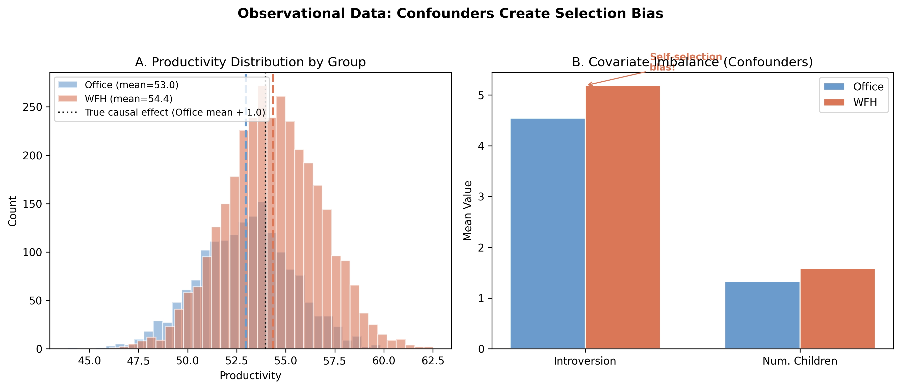
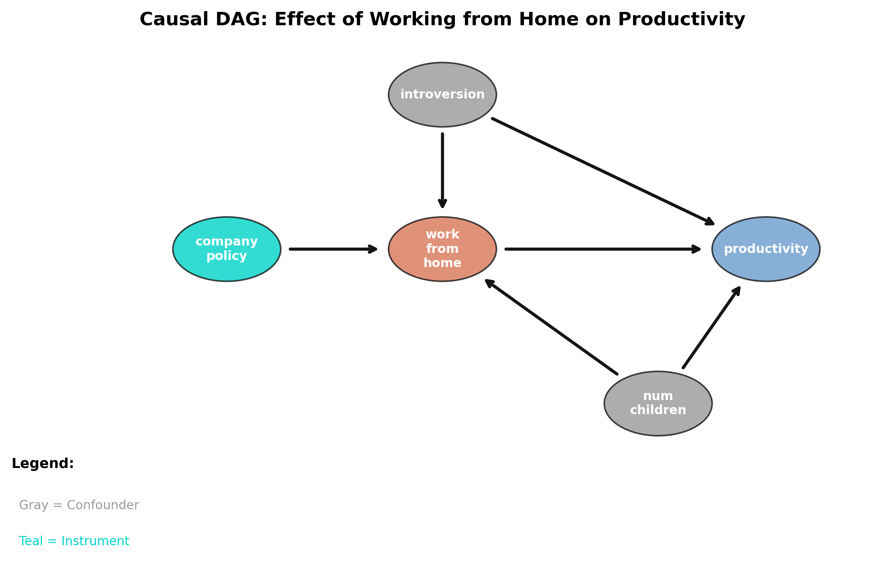
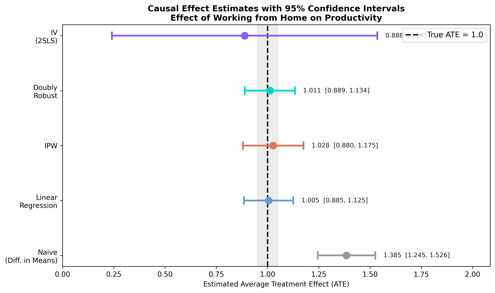

Recovering a known effect from observational data, the Model→Identify→Estimate→Refute way
Nagoya University (GSID)
July 8, 2026
Act I
A company compares 5,000 employees and finds work-from-home staff are 1.39 points more productive.
But the true effect is only 1.0. Where did the extra 0.39 come from?

Panel A: WFH (orange) vs office (blue) productivity. Panel B: WFH workers are more introverted and have more children — the fingerprint of self-selection.
Act II
productivity (mean 53.88), with a true WFH effect baked in at +1.0work_from_home (66.2% treated), assigned non-randomlyintroversion and num_children drive both treatment and outcomesubway_disruption shifts WFH but never touches productivity directlyThe estimand is the average treatment effect (ATE) — and we know it equals 1.0, so every method is graded against the truth.

The DAG (DoWhy Step 1). Introversion and children point into both WFH and productivity — a backdoor path. Subway disruption points only into WFH: the makings of an instrument.
| Step | Question | What you do |
|---|---|---|
| Model | What do I assume? | Draw the DAG |
| Identify | Is the effect computable? | Backdoor or IV |
| Estimate | What’s the number? | Regression, IPW, AIPW, IV |
| Refute | Is it robust? | Placebo, random cause, subset |
Identification (a causal question about the graph) stays separate from estimation (a statistical question about the data).
\[ATE = E\!\left[\frac{\partial}{\partial T}\, E[\,Y \mid T, X_1, X_2\,]\right]\]
Condition on introversion (\(X_1\)) and num_children (\(X_2\)) and the leftover \(T\)–\(Y\) association is the causal effect.
The assumption is unconfoundedness: no unmeasured common cause of WFH and productivity. Untestable from data alone.
\[ATE = \frac{E\!\left[\partial Y / \partial Z\right]}{E\!\left[\partial T / \partial Z\right]}\]
Divide the instrument’s effect on the outcome (reduced form) by its effect on the treatment (first stage).
The assumption is the exclusion restriction: \(Z\) moves productivity only through WFH. True by construction here.
\[Y_i = \beta_0 + \beta_1 T_i + \beta_2 X_{1i} + \beta_3 X_{2i} + \varepsilon_i\]
\(\beta_1\) is the causal effect — if the model is right and every confounder is in.
\[\widehat{ATE}_{IPW} = \frac{1}{N}\sum_{i=1}^{N}\left[\frac{T_i Y_i}{\hat{e}(X_i)} - \frac{(1-T_i)Y_i}{1-\hat{e}(X_i)}\right]\]
Weight each person by the inverse of their propensity score \(\hat{e}(X_i)=P(T_i=1\mid X_i)\), so treatment becomes independent of confounders.
IPW gives 1.0275 (SE 0.0754). It models who gets treated, not the outcome — so it costs a little precision.
\[\widehat{ATE}_{DR} = \frac{1}{N}\sum_{i=1}^{N}\Big[(\hat{\mu}_1 - \hat{\mu}_0) + \frac{T_i(Y_i-\hat{\mu}_1)}{\hat{e}(X_i)} - \frac{(1-T_i)(Y_i-\hat{\mu}_0)}{1-\hat{e}(X_i)}\Big]\]
Combine an outcome model (\(\hat{\mu}_1,\hat{\mu}_0\)) with the IPW reweight. Consistent if either model is right.
AIPW gives 1.0115 (SE 0.0623) — smallest bias of the four, precision matching regression.
The instrument is strong (F = 293), yet the Wald ratio amplifies noise — SE 0.3303, more than \(5\times\) regression’s.

Point estimates with 95% CIs against the true ATE (dashed). Naive overshoots; backdoor trio is tight; IV is unbiased but wide.
| Method | \(\widehat{ATE}\) | Robust SE | Covers 1.0? |
|---|---|---|---|
| Naive | 1.3853 | 0.0716 | no |
| Regression | 1.0051 | 0.0614 | yes |
| IPW | 1.0275 | 0.0754 | yes |
| Doubly robust | 1.0115 | 0.0623 | yes |
| IV (2SLS) | 0.8881 | 0.3303 | yes |
The naive CI [1.25, 1.53] is narrow — and excludes the truth. Precision without validity is worthless.
Act III
1.0115
\(\widehat{ATE}\), AIPW (SE 0.0623) · smallest bias of the four · matches the planted truth of 1.0
| Refuter | Expected | New effect | Verdict |
|---|---|---|---|
| Placebo treatment | \(\approx 0\) | −0.00003 | pass |
| Random common cause | \(\approx 1.0\) | 1.005 | pass |
| Data subset (80%) | \(\approx 1.0\) | 0.999 | pass |
Permute the treatment and the effect collapses to zero; add a fake confounder or drop 20% of rows and it barely moves.
Objection. Running four estimators and passing refutation tests can’t manufacture identification.
Response. Correct. The ATE is identified only under unconfoundedness (backdoor) or the exclusion restriction (IV). DoWhy makes those assumptions explicit and stress-tests the estimate — it cannot prove them. Refuters catch fragility, not unmeasured confounders.